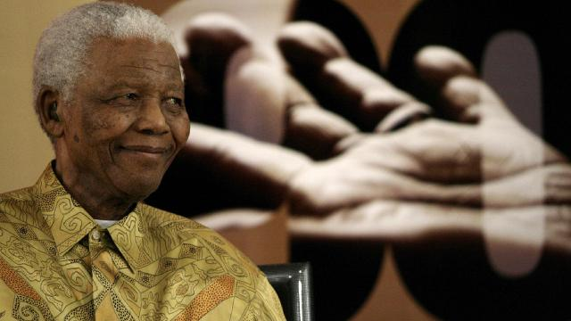

Nelson Mandela
The immortal leader of South Africa

The greatest photo taken of the greatest indeed!
The storyline of the G.O.A.T. Nelson Mandela
- 18 July 1918: Born in the village of Mvezo in Umtata, then part of South Africa's Cape Province.
- 1933: Began his secondary education at Clarkebury Methodist High School in Engcobo
- 1941: Fled to Johannesburg via Queenstown
- 1943: Mandela began studying law at the University of the Witwatersrand
- 1950: Mandela took Xuma's place on the ANC national executive
- 1955: Mandela concludes that violent action would prove necessary to end apartheid and white minority rule
- 1964: Mandela and his co-accused were transferred from Pretoria to the prison on Robben Island
- 2004: Mandela announced that he was "retiring from retirement" and retreating from public life
- 2011: Re-admitted for a lung infection and gallstone removal in December 2012.
- 2014: Announced dead
Click here for more information about the long gone hero!